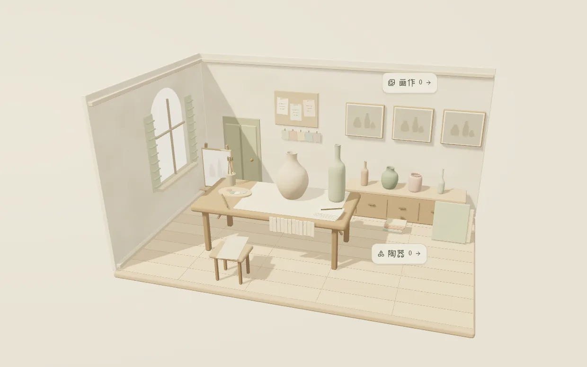

PROJECT NOTES / 2026.09
POT POT
A tiny still-life studio: pinch pots, glaze them, paint a still life, run a gallery

POT POT begins with eighteen coins and a borrowed attic above an old print shop, in a town called Bellavia. Sylvia left you the key, and the flower shop downstairs still has its lights on. Paint something first, then settle in.
The studio runs on a small loop. Pinch a pot from one of 8 shapes and glaze it in soft color. Line up to 8 pots on a wide table, move a single sun until the shadows fall right, pick a paper, and the arrangement becomes a still life with a slightly handmade touch. Hang it, sell it, or deliver it to one of six townsfolk who write in with commissions and keep writing back.
Your work shows up in the room itself: paintings on the walls, pots on the shelves. Save enough coins and you can restore a small 3D gallery one hall at a time, arrange the pieces from above, and read what visitors say about them. Progress saves on your device, and any painting exports as a 2400 × 2136 PNG.